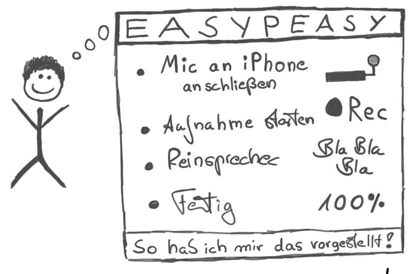
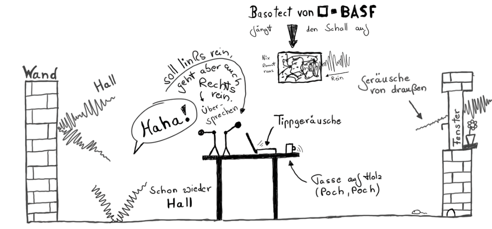

Grundlagen
Tim Berners-Lee stellte am 13.11.1990 eine Webseite online, die heute als offiziell erster Weblog gilt. Im Jahr 1997 startete Dave Winer seinen Blog Scripting News. Im gleichen Jahr wurde erstmal der Begriff "Weblog" verwendet. Weblogs stellen ihre Inhalte über sog. RSS-Feeds in maschinenlesbarer Form zur Verfügung. Dave Winer war der erste, der Weblogs und RSS-Feeds im Jahr 2000 für die erste praktische Umsetzung eines Podcasts verwendete, die damals noch Audioblogs genannt wurden. Apple gab Podcasts mit der Veröffentlichung des iPods 2005 ihren bis heute verwendeten Namen. Neben den Audioblogs sind 2004 auch die Videoblogs (Vlogs) entstanden, die durch das 2005 gegründete Unternehmen YouTube zu großer Bekanntheit gelangt sind. Anders als bei Massenmedien wie Zeitung, Radio oder Fernsehen bieten Podcasts viel mehr Freiheit bei der Formatwahl und der Interaktion mit der Community der Hörer. Podcasts könnten damit einen "Kommunikationsapparat" darstellen, den Berthold Brecht schon in seiner Radiotheorie in den 1930er Jahren dargelegt hat:
Der Rundfunk wäre der denkbar großartigste Kommunikationsapparat des öffentlichen Lebens, ein ungeheures Kanalsystem, das heißt, er wäre es, wenn er es verstünde, nicht nur auszusenden, sondern auch zu empfangen, also den Zuhörer nicht nur hören, sondern auch sprechen zu machen und ihn nicht zu isolieren, sondern ihn auch in Beziehung zu setzen.
Selber Radio zu machen, ist einfach. Man sollte sich nur vorher überlegen, mit wie vielen Leuten man in welcher Situation sprechen will, welche Anforderung an Qualität und Mobilität der Technik stellt und vor allem, wie man die Gesprächsführung gestalten will. Die ersten Versuche werden sicherlich katastrophal ausfallen, aber das ändert sich schnell. Jeder Podcaster blickt mit einem latenten Unwohlsein auf seine erste Sendung, nicht selten auch die Zweite. Aber von da ab gewinnt man schnell an Erfahrung und Routine. Wer dranbleibt wird schnell zu passablen und befriedigenden Ergebnissen kommen.
Die Möglichkeiten eines Gesprächs auszuloten, die Dynamik des Dialogs zur Wissenser- und -vermittlung zu nutzen und eine Sendung mit Spannung, Tiefe und Humor anzureichern sollte das Ziel sein. Man sollte dabei nie nur für sich produzieren, sondern sich stets im Bewusstsein halten, dass das Endergebnis von Dritten auch gehört und genossen werden soll. Mit der Einstellung kommt man schnell voran und kann in der Folge auch im Dialog mit den Hörern am Format feilen und auch für sich selbst den wünschenswerten und notwendigen Spass am Gespräch finden.
Der Wunsch, selbst Audiosendungen in Form von Podcasts zu produzieren stellt viele Neueinsteiger zunächst einmal vor ein großes Problem. Welches Format ist das richtige? Welche Audiotechnik benötige ich, um Aufnahmen in angemessener Qualität durchzuführen, zu bearbeiten und zu veröffentlichen?

Die Antwort auf diese Fragen hängt von vielen Faktoren ab: Wer ist die Zielgruppe? Wie viele Personen sind an dem Podcast beteiligt? In welchem Raum oder welcher Situation sollen die Aufnahmen gemacht werden? Wie tragbar muss das Equipment sein? Soll die Sendung live übertragen werden? Sollen Leute per Telefon mit in die Sendung einbezogen werden?
Um diese Fragen gut beantworten zu können und basierend auf den Antworten die richtige Entscheidung fällen zu können, betrachten wir zunächst verschiedene Aspekte einzeln, um konkrete Empfehlungen geben zu können.
Zum Verständnis der weiteren Diskussion der möglichen Podcast-Formate und den Anforderungen für deren Aufnahme, ist es zunächst erforderlich, ein paar Grundlagen näher zu betrachten, deren Verständnis vielleicht nicht immer vollständig erforderlich, aber zumindest sinnvoll und hilfreich ist.
Formate
Das Format der Sendung ist die primäre Design-Entscheidung eines Podcasts. Wieviele Leute nehmen teil? Wer übernimmt die Rolle eines Moderators? Wie kann, soll und darf eine Sendung sein? Alle diese Parameter haben Einfluss auf die Technik und keine Technikkonstellation ist für jede Situation geeignet. Daher ist es sinnvoll, vor Beginn darüber nachzudenken, in welche Richtungen sich der Podcast entwickeln sollte und könnte. Im Folgenden eine Beschreibung typischer Podcast-Formate.

Der Solo-Podcast (stationär)
In einem Solo Podcast spricht nur eine Person. Hier wird typischerweise eine monologische Gesprächsführung gewählt, auch wenn Mischformen denkbar sind. So könnte ein Moderator z.B. auch vorher aufgezeichnetes Audio Feedback von Hörern oder anderes Sprachmaterial oder auch Musik einspielen.
Ein Solo-Podcast benötigt in der Regel viel Vorbereitung, da man sich längere Sprechpausen in der Regel nicht leisten kann, es sei denn, man nimmt nicht alles am Stück auf. Dann aber läuft man Gefahr, dass das zusammengestückelte Endergebnis auch genau so klingt: inkoherent, mit unterschiedlichen Sprechgeschwindigkeiten, Tonlagen und ggf. unzusammenhängenden Argumentationen, wenn man gar nicht aufpasst.
Ein in einem Stück aufgenommener Podcast wirkt immer natürlicher und im Idealfall auch schwungvoller, erfordert aber hohe Konzentration. Hier kommt es letztlich auf die Gesamtlänge an. Bis zu 15 Minuten lassen sich in der Regel von einer Person noch leicht produzieren. Ist das Thema gut bekannt, eigentlich selbsterklärend oder hat der Moderator einfach schon viel Erfahrung, lassen sich auch längere Sendung realisieren.
Doch das Konsumieren monologischer Podcasts kann für den Zuhörer auch schnell anstrengend werden, da Pausen und Geschwindigkeitswechsel selten sind, die dem Hörer Verschnaufpausen und Abwechslung schaffen könnten. Dabei hilft es auch nicht, dass Podcasts grundsätzlich pausierbar sind, denn die Pause ändert nichts am Fluss der Inhaltsvermittlung.
Solo-Podcasts lassen sich mit verhältnismäßig wenig Technikaufwand realisieren. Da hier nur ein Mikrofon erforderlich ist, kann man bequem zu günstigen Großmembranmikrofonen greifen, die eine sehr gutes Klangbild erzeugen. Es gibt entsprechende Modelle bereits mit eingebauter USB- Schnittstelle, so dass das Mikrofon direkt ohne Mischpult und Verstärker an den Computer angeschlossen werden kann. Ein im Mikrofon eingebauter Monitorausgang erlaubt den Anschluss eines Kopfhörers (hier in der Regel ein platzsparender 3,5mm Stereoklinkenausgang), so dass man bei Einsprechen sich voll auf seine Stimme konzentrieren kann.
Für die Aufnahme kann im Prinzip jede noch so einfache Software mit Aufnahmefunktion genommen werden. Da hier nur eine Spur aufgenommen wird, entfällt ein Mixen. Lediglich eine Nachbehandlung mit einem Kompressor ist zu empfehlen.
Wichtig beim Einsatz eines empfindlichen Großmembranmikrofons (z.B. Rode Podcaster) ist ein möglichst hallfreier Raum. Alternativ können zur Kostenersparnis auch einfache USB-Headsets verwendet werden, doch ist die Klangqualität spürbar niedriger. Da beim Solo-Podcast außer dem dem Mikrofon kaum Hardware-Kosten entstehen ist aber zu dem Großmembranmikrofon zu raten.
Der Solo-Podcast (mobil)
Ein Solo-Podcast, der unterwegs aufgenommen wird, dürfte in der Regel einen direkten Bezug zum Aufenthaltsort haben. Typische Anwendungsfälle ist Soundscaping, wo primär Umgebungsgeräusche aufgenommen werden und zwischendurch Kommentare zu den Geschehnissen in der Umgebung hinzugefügt werden.
Geht es nur um die Sprachaufnahme reicht ein portabler Audiorecorder mit eingebautem Monomikrofon. Allerdings haben heutzutage nahezu alle Geräte ohnehin ein Stereomikrofon eingebaut. Man sollte bei der Wahl des Geräts trotzdem auf Qualität achten. Allzu billige Recorder nerven z.B. durch die Aufnahme von Berührungsgeräuschen der Hand und blechernen Klang. Hier bieten die Recorder von Edirol und Tascam einen guten Mindeststandard.
Für Soundscaping ist eine Stereoaufnahme dringend empfohlen. Ein besonderer Effekt ist eine binaurale Aufnahme, die die Mikrofone direkt im Ohr platziert. Hier sind vor allem die OKM Mikrofone der Berliner Firma Soundman zu empfehlen, die für wenig Geld eine hervorragende Abbildung der Klanglandschaft ermöglichen. Hier ist zu bedenken, dass die OKMs 5V Phantomspeisung benötigen (die sog. “Plugin Power”). Manche Recorder (z.B. viele Modelle von Sony) bieten Plugin Power serienmässig, sonst kann auch mit einem entsprechenden Speiseadapter arbeiten.
Der Dialog-Podcast
Wird eine Sendung mit zwei Personen aufgenommen, ändert sich die Dynamik des Gesprächs in der Regel deutlich. Dabei ist es unerheblich, ob die beiden Personen gleichberechtigt als Moderatoren auftreten oder ob es sich um eine Moderator/Gast-Situation handelt. Die natürlichen Pausen eines wechselseitigen Gesprächs bzw. der Übergang zwischen zwei separaten Ansprachen schafft für den Hörer ein vom Solo-Podcast deutlich unterschiedliches Format.
Der Dialog ist in vieler Hinsicht ideal und für Podcasts im besonderen Maße geeignet. Durch einen abwechselnden Gesprächsverlauf entstehen für jeden Moderator oder Gast Pausen, in denen man sich über die nächsten Schritte, Fragen und Antworten Gedanken machen kann. Das Format wird üblicherweise gegenüber einem Solo-Podcast deutlich entzerrt und wirkt entspannter.
Das Dialogische stand interessanterweise auch beim Radio in den 1930er Jahren am Anfang der Entwicklung und wurde schon früh als didaktisches Format zur Fortbildung der Hörerschaft genutzt. Es stellte auch daher die frühe Form des Talk Radio dar.
Um einen Dialog-Podcast aufzunehmen, sind die technischen Anforderungen etwas höher. Zunächst einmal müssen zwei Stimmen aufgenommen werden. Dies kann mit einem gemeinsamen oder zwei Mikrofonen gemacht werden.
Sitzt man unmittelbar nebeneinander oder gegenüber und verwendet mit ein Mikrofon mit entweder einer sehr weiträumigen Nierencharakteristik oder einer Kugelcharakteristik, können beide Teilnehmer theoretisch auf einer Spur aufgenommen werden. In diesem Fall gelten die technischen Anforderungen eines Solo-Podcasts. Es sollte aber bedacht werden, dass dies die Bewegungsfreiheit der Teilnehmer ggf. nennenswert einschränkt und man immer Gefahr läuft, den Wirkungsbereich des Mikrofons zu verlassen.
Viel sinnvoller ist es, jedem Teilnehmer an der Sendung sein eigenes Mikrofon zu geben und aus den Signalen mit einem kleinen Mischpult den Sendungsmix zu erzeugen, der dann auch in die Kopfhörer geleitet wird. Das Summensignal - der Main Mix - kann dann schon als fertige Sendung aufgezeichnet bzw. auch live gestreamt werden.
Da ein Dialog-Podcast maximal nur zwei Mikrofone verwendet kann man hier mit einer Stereoaufnahme alle Spuren aufnehmen. Dies kann für eine detaillierte Nachbearbeitung oder Extraktion von Inhalten aus der Aufnahme hilfreich sein.
Die Talkrunde
Bei drei oder mehr Teilnehmern entwickelt sich ein Gespräch schnell zu einer sehe dynamischen Gesprächsrunde, die einerseits sehr unterhaltsam sein kann, es aber auch dem Zuhörer zunehmen schwerer macht, den einzelnen Sprechern zu folgen bzw. diese zu identifizieren. Entsprechend stellen diese Runden auch für die Aufnahme weitere Anforderungen.
In einer Talkrunde ist es unerlässlich, dass jeder Teilnehmer sein eigenes Mikrofon hat. Sitzen alle Teilnehmer zwangsläufig sehr eng zusammen könnte man überlegen, statt Kondensatormikrofonen eher auf qualitativ hochwertige dynamische Mikrofone zu setzen, um in der Aufnahme eine bessere Kanaltrennung zu erreichen.
Eine Möglichkeit, die Verständlichkeit einer großen Gesprächsrunde zu erhöhen, ist, jeden Sprecher im Stereobild an einer anderen Stelle zu positionieren. Wenn manche Sprecher mehr nach links, andere mehr nach rechts positioniert werden, können die Zuhörer die Stimmen ggf. leichter auseinanderhalten bzw. einen Sprecherwechsel in einem schnellen Gespräch einfacher registrieren.
Es sollte aber darauf verzichtet werden, die Positionierung zu extrem zu machen. Alle Sprecher sollten auf beiden Kanälen deutlich hörbar sein, damit auch in extremen Stereowiedergabe-Situationen (z.B. im Auto) noch ein akustisch nachvollziehbares Ergebnis herauskommt. Eine einseitige Belastung eines Kanals ist auch beim Hören mit Kopfhörern eher unangenehm.
Auch eine Mehrspuraufnahme, in der jeder Sprecher separat aufgenommen wird, ist bei einer Talkrunde sinnvoll, denn dies macht eine nachträglich Bearbeitung viel einfacher. Davon abgesehen kann man auch die räumliche Positionierung im Nachhinein feinabstimmen und ein optimales Ergebnis erzielen.
Workflow
Die Produktion von Podcast-Episoden beginnt bereits vor der eigentlich Aufnahme, da man sich zunächst einmal darüber im Klaren sein sollte, was man eigentlich aufnehmen möchte, wie und mit wem:

Bevor man eine Podcast-Episode aufnimmt, sollte man sich über einige Parameter der Aufnahme Gedanken machen. Nicht alles, was hier aufgeführt wird muss zwingend so umgesetzt werden, aber es lohnt sich, zumindest zu prüfen, ob man vielleicht ohne nennenswerten Aufwand das eine oder andere von vornherein den Anforderungen an eine gute Aufnahme anpassen kann.
Raumsituation und Hall
Wenn man innerhalb eines Raumes aufnimmt, sollte man sich einen Raum suchen, der nicht so viel Hall entwickelt. Kahle Wände und vor allem glatte Fensterfronten sind die Hauptursache für Hall, der sich nachher störend auf die Aufnahme legt und es den Zuhörern unnötig schwer macht, dem Gespräch zu folgen.
Es ist nicht immer einfach, vorhandenen Hall zu unterbinden, so sollte man gleich nach einem Raum Ausschau halten, der eine bestimmte "Unordnung" mit sich bringt: schräge Wände, Bücherregale, Pflanzen, Polstermöbel und Teppiche, Wandteppiche und Vorhänge – all das trägt erheblich dazu bei, dem Schall nicht zu viel Reflektionsfläche zu bieten und ihn zu absorbieren oder zu diffundieren.
Wer sich einen festen Raum als Aufnahmestudio einrichten will, sollte überlegen, ob man kritische Stellen nicht gleich etwas umstellt oder gar absorbierende Materialien installiert. Eine große Fensterfront lässt sich durch einen Molton-Vorhang schnell in den Griff kriegen. Wandteppiche können Wände entschärfen.
Dazu ist es sinnvoll, nicht zu viel zusätzliche "Klangkörper" ins Spiel zu bringen. Metall- oder Glastische können sich unangenehm einbringen, wenn Gesprächsteilnehmer mit ihren Händen oder irgendwelchen Büroartikeln auf der Oberfläche herumfuhrwerken. Hier ist ein massiver Holztisch sinnvoller, ggf. kann man auch mit Schreibtischauflagen Entspannung schaffen.
Sprecherposition
Ein bequeme Sitzposition ist für Sprachaufnahmen sehr von Vorteil. Idealerweise sollte man das aber nicht zusammengekrümmt im Sofa sitzen, sondern möglichst aufrecht, so dass der Brustkorb und Bauchbereich seine volle Atmungsunterstützung entwickeln kann.
Wer mag kann auch gleich stehen oder zumindest eine Stehhilfe bzw. Hochsitz verwenden. Dann ist das Sprechen am einfachsten, man kann leichter laut und direkt sprechen und wird am Ende besser verstanden.
Mikrofonierung
Die Aufgabe des Mikrofons ist es, die Sprache jedes Gesprächsteilnehmers optimal einzufangen und für die Aufnahme zu wandeln. Daher ist es optimal, wenn jeder Teilnehmer auch über sein eigenes Mikrofon verfügt.
Zwar kann man auch mehrere Leute mit einem Gemeinschaftsmikrofon aufnehmen, doch wird es sich kaum vermeiden lassen, dass man dabei auch immer viel "Raum" aufnimmt, der sich in der Aufnahme störend auswirkt. Der Aufwand, jedem Teilnehmer sein eigenes Mikrofon zuzuteilen lohnt sich daher auf jeden Fall. Wer hier Geld sparen möchte, sollte sich seiner Optionen bei der Auswahl des richtigen Mikrofons bewusst sein.
Entsprechend benötigt man für die Aufnahme auch einen eigenen Mikrofoneingang (Mikrofonverstärker) am Mischpult oder Aufnahmegerät. Hier muss also die richtige Kapazität vorhanden sein.
Hardware
Der Ort der Aufnahme einer Podcast-Episode kann sehr unterschiedlich sein. Von der mobilen Aufnahme mit dem Smartphone bis zum voll ausgestatteten Tonstudio sind alle Schattierung denkbar. Für jede Aufnahmesituation müssen in der Planung die Rahmenbedingungen bedacht werden, die sich auf die Qualität der Aufnahme auswirken.

Mikrofone
Eine Aufnahme wird niemals besser als ihr schwächstes Glied zulässt und vor allem kann eine einmal gesenkte Qualität in der Aufnahmekette nicht mehr aufgewertet werden (bestenfalls “gerettet”). Daher ist es erforderlich, schon am Beginn der Aufnahmekette darauf zu achten, keinen nennenswerten Fehler zu machen. Die richtige Wahl des Mikrofons ist dabei entscheidend, denn alles steht und fällt mit der Wandlung von Schall zu einem elektrischen Signal. Im Kern müssen zwei Arten von Mikrofonen unterschieden werden. Dynamische Mikrofone und Kondensator-Mikrofone. Beide sind für unterschiedliche Zwecke gedacht und geeignet und beide kommen für die Podcast-Produktion in Frage.

Dynamische Mikrofone
Ein dynamisches Mikrofon erzeugt das elektrische Signal, indem die Schallwellen auf eine Membran auftreffen, deren Bewegung dann auf eine Spule übertragen werden. Diese Spule umschließt einen Magneten der durch Induktion einen Stromfluss in dieser Spule erzeugt. Dieser Stromfluss kann dann als Audiosignal weiter verarbeitet werden.
Dynamische Mikrofone erfordern einen relativ hohen Schalldruck, was sich daran äußert, dass ihre Signale mit abnehmendem Abstand der Geräuschquelle (z. B. dem Sprecher) zum Mikrofon stark abnehmen. Nur eine nahe am Mikrofon befindliche Schallquelle wird vom Mikrofon gewandelt, leisere Quellen reißen schnell ab und werden nicht berücksichtigt. Damit ist ein dynamisches Mikrofon sehr unempfindlich gegen (auch laute) Hintergrundgeräusche.
Der Vorteil ist aber auch ein Nachteil: ein dynamisches Mikrofon zwingt den Sprecher, den Abstand zum Mikrofon möglichst gering zu halten, was eine gewisse Erfahrung und Disziplin beim Sprechen erfordert. Für eine stationäre Aufnahme sind dynamische Mikrofone meist nicht die erste Wahl. Man kann diesen Nachteil etwas abmildern, wenn man sich für extrem hochwertige und damit auch sehr teure Mikrofone entscheidet, die qualitativ mit Kondensatormikrofonen mithalten können.
Kondensatormikrofone
Kondensatormikrofone arbeiten – wie der Name schon sagt – nach dem Kondensatorprinzip. Zwei sich in engem Abstand gegenüberstehende Metallplatten werden mit einer elektrischen Spannung geladen und erzeugen ein Magnetfeld. Auftreffende Schallwellen verändern den Abstand der beiden Platten und erzeugen einen entsprechenden Stromfluss. Gegenüber der Bewegung der Membran/Spule des dynamischen Mikrofons ist die Empfindlichkeit eines Kondensatormikrofons deutlich größer.
Ein Kondensatormikrofon kommt daher dem Podcaster im Prinzip sehr entgegen und auch im professionellen Radio kommen selten andere Mikrofone zum Einsatz. Die Qualität ist bei gleichem Preis deutlich höher, Stimmen werden viel realistische abgebildet und auch kleinste Nuancen werden registriert.
Für die Vorladung des Kondensators benötigen Kondensatormikrofone eine anliegende Spannung, die sogenannte Phantomspannung (oder auch Phantomspeisung). Diese liegt in der Regel bei 48V und wird von vielen Mikrofoneingängen mitgeliefert. Dies gilt es aber stets zu prüfen, nicht jeder Mikrofoneingang liefert Phantomspannung bzw. manchmal muss diese noch explizit ein- oder zugeschaltet werden.
Auch hier ist der Vorteil ein Nachteil. Zwar sind bei dem empfindlichen Kondensatormikrofon dank der ungeheuren Empfindlichkeit Lautstärke und Nähe zum Mikrofon nicht mehr ganz so entscheidend, wie beim dynamischen Mikrofon, doch bedeutet dies auch, dass unerwünschte Hintergrundgeräusche viel eher mit auf der Aufnahme landen.
Ein daraus resultierendes Problem kann das sogenannte Übersprechen sein: bei einer Aufnahme mit mehreren Mikrofonen kann eine laute Stimme von einem weiteren, ggf. zu empfindlich eingestellten Mikrofon mit aufgenommen werden. Dieses Übersprechen erzeugt schnell unerwünschte Halleffekte, auf die mit besserer Schalldämmung oder niedrigeren Eingangspegeln reagiert werden sollte.
Mikrofonvorverstärker
Das Ausgangssignal eines Kondensatormikrofons ist deutlich niedriger als das eines dynamischen Mikrofons. Es muss daher am Mikrofoneingang zusätzlich verstärkt werden - der sogenannte Mikrofon-Vorverstärker. Qualitativ minderwertige Vorverstärker können dabei auch das beste Kondensatormikrofon nutzlos machen, da sie zuviel Rauschen hinzufügen oder einfach nur unsauber verstärken und das Signal verzerren.
Bei der Wahl eines Mischpultes sollte daher nicht nur auf die reine Mischfunktionalität oder vorhandene Ein- und Ausgänge geachtet werden - auch die Qualität der Mikrofoneingänge sollte geprüft werden. Für einfache Anforderungen sollten die meisten Mischpulte ausreichen, aber es prüfe wer sich ewig bindet.
Neben Mikrofoneingängen in Mischpulten und Rekordern gibt es auch reine Mikrofonvorverstärker, die sich ausschließlich auf die Aufbereitung der Mikrofonsignale konzentrieren. Diese sind aber für einfache Podcast-Setups eher nicht erforderlich, es sei denn, man benötigt eine große Anzahl von separaten Eingängen, die einem ein Mischpult oder Audiointerface nicht bietet.
Mikrofoncharakteristik
Jedes Mikrofon hat eine bestimmte Charakteristik, die bezeichnet, in welchem Bereich um das Mikrofon das Mikrofon besonders sensitiv ist. Üblicherweise unterscheidet man grob zwischen einer “Niere”, einer nierenförmigen Ausprägung des Aufnahmebereichs und einer “Kugel”, einem 360-Grad-Aufnahmbereich.
Die “Niere” ist aber nicht immer gleich. Man unterscheidet im Detail zwischen einfachen und sog. “Supernieren” und meint damit die konkrete Ausdehnung des Aufnahmebereichs, der mehr oder weniger eng gefasst sein kann. Richtmikrofone sind z.B. Mikrofone in denen die Niere so schmal gefasst ist, dass der Aufnahmebereich nur im unmittelbaren Frontbereich des Mikrofons gilt. Damit können Störgeräusche von der Seite umgangen werden, erfordern aber auch eine präzise Ausrichtung des Mikrofons.
Kopfhörer und Headsets
Kopfhörer sind für das Podcasting ein wichtiges Instrument und das nicht nur zum Abhören von Aufzeichnungen. Grundsätzlich empfehlen sich Kopfhörer schon für die Aufnahme von Podcasts, um die Qualität des erzeugten Tonsignals in Echtzeit zu überprüfen. Sind alle Teilnehmer einer Sendung mit Kopfhörern ausgestattet, vereinfacht dies auch die Kommunikation im Gespräch. Nebengeräusche können leichter ausgeblendet werden und man erhält zusätzlich noch die Möglichkeit, über das Mischpult zusätzliche Tonsignale einzuspielen (z.B. weitere Gesprächsteilnehmer über Telefon oder beliebiges aufgezeichnetes Audiomaterial, Hintergrundmusik). Allein schon aus atmosphärischen Gründen kann zu der Verwendung von Kopfhörern nur geraten werden, auch wenn dies die Initialkosten erhöht.

Headsets
Besonders interessant für Podcaster sind sogenannte "Hörsprech-Garnituren", im Volksmund auch Headsets genannt. Diese kombinieren Kopfhörer und Mikrofon. Da hier beide Komponenten qualitativ hochwertig sein sollten und der Tragekomfort stimmen muss, ist die Auswahl entsprechend niedrig.
Headsets bieten einen weiteren Vorteil: dadurch, dass das Mikrofon direkt am Kopf befestigt ist, verändert sich der Abstand zur Mikrofonkapsel durch Kopf- und Körperbewegungen nicht. Ein einmal richtig eingestellter Mikrofonhals sollte dauerthaft konstante Ergebnisse liefern. Dies ist vor allem für mit dem Umgang mit Mikrofonen unerfahrene Gäste einer Sendung hilfreich.
Eine gute Option sind z.B. die Beyerdynamic DT297 Modellserie, die gute Kopfhörer und für ihre Größe hervorragende Kondensatormikrofone kombinieren. Das Anschlusskabel ist zudem nicht fest verbunden, sondern kann über einen Stecker dem jeweiligen Längen- und Steckerbedarf angepasst werden.
Monitoring und Latenz
Beim Einsatz von Kopfhörern und Headsets kommt ein Aspekt ins Spiel, der von Einsteigern häufig übersehen wird: es ist wichtig, dass das Audiosetup den Main Mix möglichst verzögerungsfrei an die Kopfhörer liefert. Entstehen durch den Aufbau große Latenzen von mehreren Millisekunden, wird der Sprecher durch sein eigenes Audiosignal verwirrt. Dies gilt es zu verhindern.
In einem rein analogen Setup, wo der Kopfhörer-Mix durch ein Mischpult erzeugt wird, sind Latenzen in der Regel kein Problem, da der Signallauf in Lichtgeschwindigkeit erzeugt wird.
Werden allerdings Mikrofone per USB oder andere digitale Schnittstellen über einen Computer geleitet und der Kopfhörer-Mix zunächst durch eine Kaskade von Software und Modulen geleitet kann es zu erheblichen Verzögerungen kommen, die sich störend auswirken. Diese Hörlatenz ist auf jeden Fall zu vermeiden.
Mischpulte
Ein Mischpult ist nicht immer erforderlich, empfiehlt sich aber in den meisten stationären Aufnahmesituationen, da es die Signalwege vereinheitlicht und flexibel macht. Ein Mischpult erlaubt aber vor allem das Erzeugen eines “Mix” beim Einsatz von mehr als einem Mikrofon.
Mischpulte gibt es in allen Größen, Ausbaustufen und Preisklassen, doch folgen sie alle ähnlichen Konzepten. Im Mittelpunkt steht die parallele Anordnung mehrerer “Kanalzüge” (englisch “Channel Strips”). Jeder Kanalzug repräsentiert den Verlauf eines Eingangssignals. Manche Kanalzüge enthalten Mikrofoneingänge mit Vorverstärkern, häufig auch mit 48V-Phantomspeisung. Im weiteren Verlauf kann auf jedem Kanalzug das Eingangssignal per Equalizer in seinem Klangbild beeinflusst und die Verteilung des Signals auf die beiden Stereokanäle des “Main Mix” eingestellt werden (englisch “Panning”). Ein Hauptregler steuert schlicht die Lautstärke des Eingangssignals im Main Mix.
Größere Mischpulte bieten darüberhinaus die Möglichkeit, das Signal auch noch in einen separaten Stereomix einzublenden (den sogenannten AUX-Mix). Dieses Feature kann für Podcaster in Live-Situationen und bei der Einbindung von Telefonanrufern (z.B. über ISDN oder IP-Telefonie) sinnvoll und notwendig sein.
Einfache Mischpulte sind analog aufgebaut, alle Signalwege sind elektrisch gekoppelt. Moderne, teurere Mischpulte arbeiten zunehmend auf digitaler Basis und bilden die Signalwege als Informationsfluss ab. Digitale Systeme sind in der Regel flexibler in der Verschaltung von Ein- und Ausgängen und weisen klassische Probleme analoger Mischpulte wie das Übersprechen von Kanälen durch mangelnde Signaltrennung prinzipbedingt nicht mehr auf.
Für Podcaster zunehmend interessant sind Mischpulte, die ihren Main Mix (und häufig zusätzlich auch die Eingangsignale und AUX-Mixe) per USB- und/oder FireWire-Schnittstellen direkt einem Computer zugänglich machen. Dem Computer gegenüber stellt sich das Mischpult als mehrkanaliger Audioein- und ausgang dar. Dies erlaubt die einfache Aufnahme auf dem Computer, sowie das Einspielen von Audiomaterial direkt vom Computer in den Main Mix per Software ohne den Umweg eines analogen Audiosignals. Viele Einstiegsmodelle (wie z.B. von Phonic oder Behringer) bieten schon solche Schnittstellen, die auch ohne zusätzliche Treiber “out of the box” funktionieren.
Audio-Rekorder
Der Markt bietet eine Vielzahl an möglichen Rekordern, mit denen man Gespräche aufzeichnen kann. Das geht von einfachen portablen Rekordern mit eingebauten Mikrofonen, die man gut für Ad-Hoc-Aufnahmen unterwegs einsetzen kann bis zu speziellen, mehrkanaligen Geräten, die Phantomspeisung für Kondensatormikrofone bieten.
Wenn man ein Mischpult einsezt benötigt man für eine einfache Aufnahme nur einen Rekorder mit einem Stereoeingang. Alternativ kann man hier auch einen tragbaren Computer verwenden, doch sollte man tunlichst vermeiden, eingebaute analoge Audioeingänge zu verwenden, da diese in Laptops in der Regel zu starken Störstrahlungen ausgesetzt sind und extrem minderwertige Signale aufzeichnen. Möchte man einen Computer einsetzen empfiehlt sich der Einsatz eines Mischpultes mit USB oder FireWire Interface, das man mit dem Computer verbinden kann.
Eine weitere interessante Entwicklung sind Geräte, die ein Hybrid aus mobilen Mischpulten und Aufnahmegeräten darstellen. Sie erlauben den Anschluß von Mikrofonen, das Erstellen eines Main Mix und eine Mehrspur- Aufzeichnung in einem Gerät bei zunehmend preislich attraktiven Preisen.
Das Zoom R24 kombiniert alle für das Podcasting wichtigen Funktionen in einem Gerät. Das erleichert auch den Transport und kurzfristigen Einsatz und erlaubt mobilere Formate ohne auf Aufnahmekomfort verzichten zu müssen.
Allerdings gibt es bei solch stark integrierten Geräten auch immer Einschränkungen gegen über aus Komponenten zusammengesetzten Setups. Dies sollte bei der Planung berücktsichtigt werden.
So ist ein Stereoausgang nicht genug für flexible Mixer-Setups, bei dem z.B. einem Gesprächsteilnehmer, der über Telefon zugeschaltet ist, ein eigener Audiomix geliefert werden muss, der seine eigene Stimme nicht enthält (der sogenannte "N-Minus-Eins-Mix"). Für normale Gesprächsrunden kommt man damit aber schon sehr weit.
Effektgeräte
Unter dem Begriff "Effektgeräte" versteht man eine nahezu endlose Typenvielfalt von Geräten, mit denen man das eingehende Tonsignal auf dem Weg zum Mischpult verändern kann. Die meisten Geräte machen allerdings nur in der Musikproduktion wirklich sinn. Allerdings können manche Geräte auch die Klangqualität für Podcasts merklich beeinflussen und sollten bei aufwändigeren Produktionen zumindest erwogen werden.
Kompressoren
Die Kompression ist die wichtigste Signalverarbeitung im Radiobereich. Jeder kennt den Effekt vom normalen Radio hören: ob man "lauter" Musik oder einem ruhig redenden Nachrichtensprecher lauscht, nur selten sieht man sich genötigt, den Lautstärkeregler des Empfangsgerätes zu bedienen, weil sich im Kern immer das selbe Lautstärkeempfinden einstellt. Dies ist ein beabsichtigter Effekt und wird durch eine aufwändige Kompression erreicht.
Als Kompression bezeichnet man konkret das Verändern des Audiosignals in einer Weise, so dass besonders laute Passagen in ihrer Lautstärke abgesenkt werden, während leisere Passagen weniger oder gar nicht verändert werden. Dies führt dazu, dass laute und leisere Passagen danach "näher" beinander liegen. Man spricht davon, dass die "Dynamik" des Signals erhöht wurde.
Kompressoren müssen mit bestimmten Parametern gesteuert werden: ein Schwellwert (engl. Threshold) bestimmt, ab welcher Lautstärke die Kompression einsetzt und ein ein Kompressionsverhältnis (engl. Compression Ratio) bestimmt, in welchem Größenordnung die Kompression angesetzt wird.
Zusätzlich kann der Übergang am Schwellwert weicher eingestellt werden (engl. Soft Knee) und meist übernimmt der Kompressor auch die Nachverstärkung des in seiner Lautstärke reduzierten Signals gleich mit, um den Lautstärkeverlust auszugleichen. Nicht selten finden sich noch zusätzliche Limiter, die das Signal nachträglich bei einer bestimmten Maximallautstärke hart begrenzen.
Im Ergebnis hat man ein insgesamt lauter klingendes Signal, das die Unterschiede zwischen lauten und leisen Passagen reduziert.
Die Kompression ist besonders für Podcasts wertvoll, da Podcasts häufig unterwegs und nicht selten in lauten Umgebungen gehört werden. Da ist es besonders wichtig, dass man die maximale Lautstärke des Abspielgeräts gut nutzt und ein sorgfältig komprimiertes Signal hält die gesamte Aufnahme auf einer hohen Gesamtlautstärke, so dass auch bei vielen Störgeräuschen der Inhalt immer noch deutlich wahrgenommen werden kann.
Expander
Der Expander ist der kleine Bruder der Kompression und ist besonders bei der Aufnahme mit mehreren Mikrofonen oder wenn die Aufnahme unter Bedingungen mit störenden Hintergrundgeräuschen durchgeführt wird, hilfreich.
Ein Expander geht ähnlich vor wie ein Kompressor, allerdings werden hier leise Passagen noch leiser gemacht, während lautere Passagen weniger oder gar nicht verändert werden. Der Expander sorgt also dafür, dass in Gesprächspausen leise, aber für die Aufnahme nicht relevante Klangquellen, automatisch ausgeblendet werden.
Bei Aufnahmen mit mehreren Mikrofonen kann der Expander das "Übersprechen" von einem auf ein anderes Mikrofon einschränken bzw. unterbinden. Damit erzielt man bei einer Mehrspuraufnahme besser voneinander getrennte Signale, was die Nachbearbeitung vereinfacht und auch potentielle Halleffekte aus der Aufnahme herausnimmt.
Die Parametrisierung ist auch ähnlich zur Kompression. Wieder bestimmt ein Auslösewert (engl. Threshold) bis zu welcher Lautstärke der Expander aktiv werden soll und
Software
Podcasting ist eine Publikationsform, die auf Computer und mobile Abspielgeräte (z.B. Smartphone) zugeschnitten ist. Es ist anzunehmen, dass nahezu jeder, der Podcasts produziert oder Podcasts konsumiert, über einen Computer verfügt. Doch dies kann sich ändern, denn zum einen werden Smartphones für den Empfang von Podcasts zunehmend interessanter und setzen mit unter schon keinen Computer mehr voraus. Auch lassen sich schon heute mit Smartphones und Tablets auch Audioaufnahmen und Schnitt durchführen und der nächste Schritt, der dann auch Encoding und Publikation übernimmt ist nicht mehr weit. Trotzdem bietet der Computer immer noch die größte Bandbreite an Bearbeitungsmöglichkeiten für qualitativ hochwertige Bearbeitung der Audiodaten.
In einer stationären Aufnahmesituation spricht einiges dafür, die Audiodaten gleich mit dem Computer aufzunehmen. Einerseits entfällt das ggf. zeitaufwändige oder fehleranfällige Übertragen der Daten von einem Aufnahmegerät, andererseits bietet der Computer insbesondere im Bereich der Mehrspuraufnahmen und Echtzeitanwendung von Filtern etc. viele Möglichkeiten.
Konkurrenzlos ist der Computer bei der Audiobearbeitung. Das Einkürzen der Sendung, das Bearbeiten von Fehlern und die anschliessende Audioaufbereitung für die Veröffentlichung lassen sich am besten mit einer integrierten Audiosoftware machen. Die Auswahl an Programmen ist groß. Hier eine kleine Auswahl.
Ardour
Ardour ist eine Software zum Aufnehmen, Bearbeiten und Mixen auf Linux, macOS und Windows.
Audacity
Audacity ist eine freie und damit kostenlose Softwarelösung für einfache Aufnahme und Audiobearbeitung. Hier findet sich im Kern alles, was man für den Einstieg braucht. Allerdings ist das Programm nicht besonders leistungsfähig und zuverlässig. Für große und wichtige Aufnahmen ist es eher geraten, auf professionelle Angebote zu setzen. Audacity läuft auf nahezu allen Desktop-Plattformen.
Audition
Audition ist ein “gut abgehangenes” Stück Software von Adobe, dass durch seine Leistungsfähigkeit und vielen Möglichkeiten, kaputte Aufnahmen zu retten glänzt. Audition läuft auf Microsoft Windows, erscheint jetzt aber auch auf macOS.
Ferrite
Ferrite ist eine iOS App zum Aufnehmen und Bearbeiten (Multitrack) von Audio.
Garageband
Garageband ist eine Software von Apple für die Aufnahme und Bearbeitung von Musik und Podcasts. Es ist sehr einfach zu bedienen und hat viele Funktionen, die gerade die Podcastaufnahme - und publikation unterstützen. So kann man in Garageband einfach auch Kapitelmarken hinzufügen. Garageband läuft nur unter Mac OS X. Es erscheint jetzt eine iPad-Version, von der noch nicht klar ist, wie gut sie sich über Podcast-Aufnahmen eignet.
Hindenburg
Hindenburg ist eine Digital Audio Workstation für Radio Broadcasting und Podcasts.
Reaper mit Ultraschall
Reaper ist eine Anwendung für Audio Produktion mit Mehrspuraufnahme, Midi Aufnahme und Werkzeugen für Bearbeitung, Mixen und Mastering von Musik. Das Projekt Ultraschall optimierte Reaper für die Aufnahme und Produktion von Podcasts.
Studio Link
Studio Link ermöglicht hochwertige Audioverbindungen über das Internet, z.B. zum schnellen und einfachen Einbinden von Gästen.
Weiterführende Informationen
Literatur:
- Diemand, V., Mangold, M., Weibel, P.: Weblogs, Podcasting und Videojournalismus: Neue Medien zwischen demokratischen und ökonomischen Potenzialen. Heise Zeitschriften Verlag GmbH 2006.
- Hagedorn, B.: Podcasting: Konzept, Produktion, Vermarktung. mitp. 2016.
- Herrington, J.D.: Podcasting Hacks. Tips & Tools for Blogging Out Loud. O'Reilly Media. 2005.
- Pieper, F.: Das P.A. Handbuch Praktische Einführung in die professionelle Beschallungstechnik. GC Carstensen Verlag. 2011.
- Rokk, K.: Die Podcasting-Goldgrube. Der umfassende Ratgeber für Podcast-Einsteiger. CreateSpace Independent Publishing Platform. 2014.
- Rubens, A.: Podcasting. Das Buch zum Audiobloggen. O'Reilly Verlag GmbH. 2006.
Weblinks:
- Wikipedia-Artikel Podcast
- Video What is a Podcast?
- Apple Podcast FAQ - Was ist ein Podcast? Wie kann ich auf iOS in Podcasts einsteigen?
- Sketchnote Podcast in a Nutshell - Ein kleiner Leitfaden zur Orientierung in der komplizierten Welt des Podcasting
- fyyd.de - Podcast Suchmaschine
- Das Sendezentrum - Der Schmelztigel für die freie Podcast-Szene, u.a. Podcast Konferenz SUBSCRIBE
- sendegate.de - Die Podcasting-Community
- How to Podcast - öffentliche Facebook-Gruppe zum Podcasting (englischsprachig, war früher auf Google+)
- Der Lautsprecher - Ein Podcast über das Senden und Empfangen werden
- International Podcast Day - Jedes Jahr am 30. September